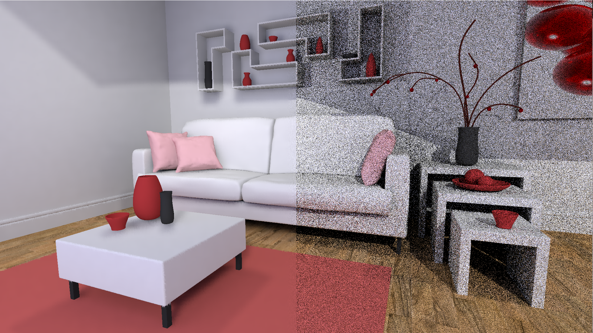
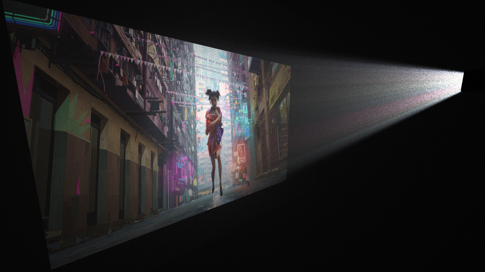
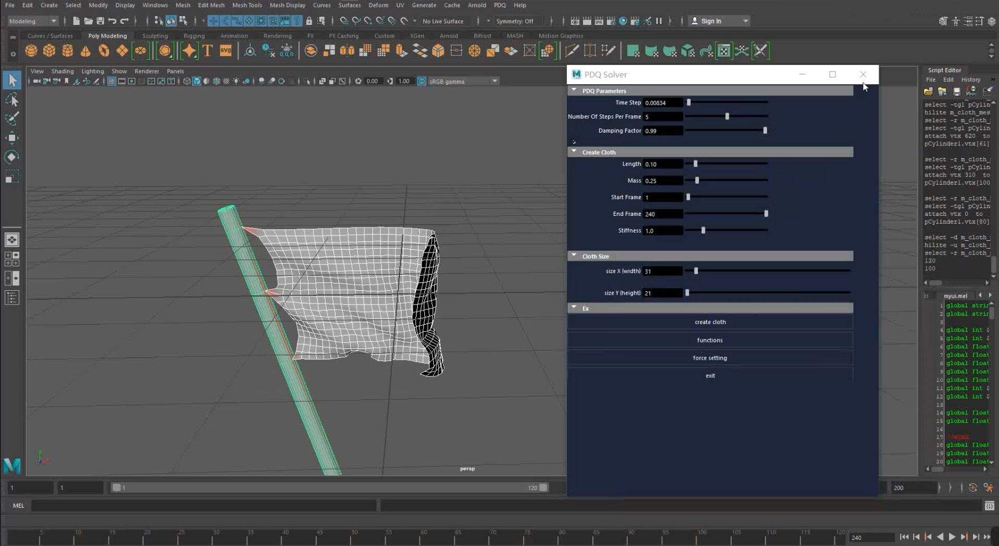
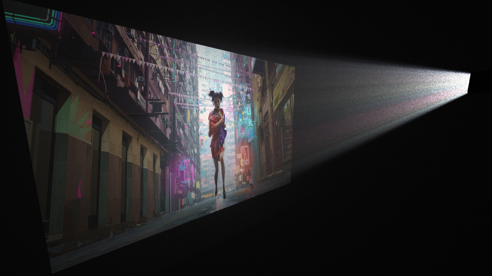
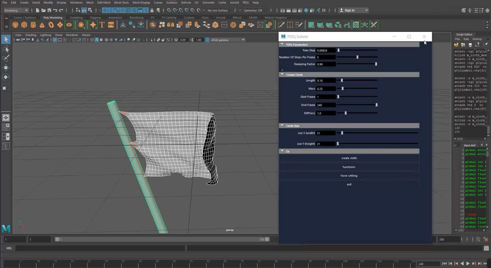

"BMFR DXR Denoiser"
Real-Time Path Tracing Reconstruction In DXR
- 78 FPS real-time raytracing with GeForce RTX 2070
- Based on the SIGGRAPH paper ”Blockwise Multi-Order Feature Regression for Real-Time Path Tracing Reconstruction”
"Zelda"
Cuda Path Tracer
- Support glTF scene
- Support depth of field and motion blur

"Cinema"
Volumetric Path Tracer
- Multiple importance sampling
- Light is filtered by a film before reaching the screen, just like an old-fashioned cinema
Sketch-Like Rendering
WebGL2, Shader Programming
- Raytracing in shader
- Use signed distance function to generate the flower and the pencil
- Based on the SIGGRAPH paper ”Suggestive Contours for Conveying Shape”

PDQCloth Sim
Maya Plugin Development
- Real-time cloth modling and animation
- Allow user-defined cloth structures, parameters, external forces and constraints
- Based on the SIGGRAPH paper ”fast simulation of mass-spring systems”
Simple Campfire
WebGL2, Shader Programming
- Real-time 3D fire and fog are procedurally generated by raymarching noise funtions
- Animated soft shadow
- Volumetric lighting based on density gradients
The Nasir-ol-molk Mosque
Modeling in Maya
- A 3d reconstruction of the Nasir-ol-molk Mosque with textures and lighting
- Use normal map to generate the distorted reflection on the ground